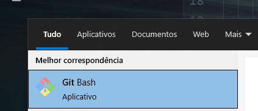
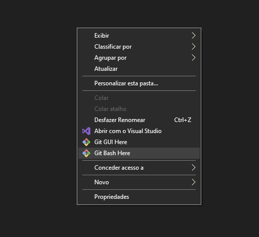
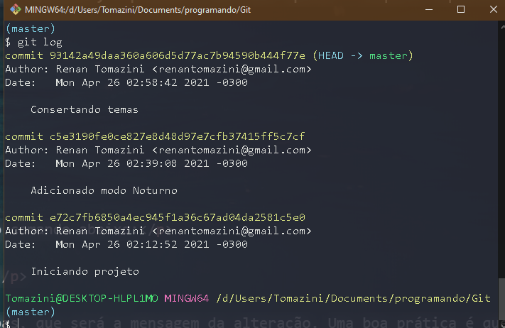

Acesse o link:
DownloadSiga as instruções e instale o Git padrão.
Caso esteja usando Linux, antes de tentar instalar verifique no console com o comando abaixo se você já não está com git instalado.
User@NotebookName
$ git --version
Caso precise configurar pela primeira vez o User e email para as alterações, use os comandos abaixo:
User@NotebookName
git config --local user.name "Seu nome aqui"
git config --local user.email "seu@email.aqui"
Após a instalação abra o "bash", no Windows seu icone é este:
Você pode também abrir dentro de uma pasta durante o explorer, basta clicar com o botão direito e selecionar "Git Bash Here":
Para iniciar um repositório, usamos o comando abaixo que retornará a última linha, mostrando o inicio do repositório:
User@NotebookName
$ git --init
Initialized empty Git repository in C:/Users/Usuario/Documents/programando/Git/.git/
Após iniciar o repositório, se usarmos o comando
$ git status
Teremos uma lista de "Untracked files", que são os arquivos que não estão sendo monitorados pelo git.
Então, para adicionar os mesmos em nosso Git, temos dois comandos, o primeiro adiciona apenas o arquivo especificado
$ git add index.html
Este segundo adiciona todos os arquivos da pata
$ git add .
Para fazer o Commit e salvar suas alterações, usamos o comando abaixo:
$ git commit -m "Mensagem descritiva de alterações"
O "-m" é uma indicação da mensagem que está entre aspas, que será a mensagem da alteração. Uma boa prática é que ela seja descritiva e pequena, não uma documentação mas apenas uma mensagem do que foi alterado
Para ver o histórico de alterações, fazemos com o seguinte comando:
$ git log
Esse comando retornará nossas alterações, quem fez,em qual horário, hash,email e mensagem deixada.
A imagem abaixo mostra ass alterações deste site:
Além disso, temos outras maneiras de acessar os históricos, incluindo a visualização de alterações, abaixo alguns exemplos de comandos:
$ git log --oneline
->Exibe as alterações em uma linha resumida
$ git log -p
->Exibe as alterações detalhadas com as linhas que foram adicionadas
As vezes queremos que algo não esteja no projeto, seja uma configuração de IDE seja um arquivo de credenciais com dados sensíveis,
Fazemos então uma lista de arquivos que não podem estar sincronizados ao Git, isso é feito com um arquivo ".gitignore", onde lá dentro ficará os arquivos a serem ignorados.
.gitignore
ideConfig.txt
keys.db
exemplo.jpg
FotosDaFestaFicaramOtimas.exe
Precisamos adicionar o gitignore também ao git para que ele possa usa-lo, use o comando :
git add .gitignore
git commit -m "Adicionando .gitignore"
Para um repositório remoto, precisamos criar o chamado "repositório puro", ele vai conter apenas as alterações dos arquivos e não cópias dos mesmos. Para adicionar um repositório a nossa lista de repositórios acessíveis precisamos executar o seguinte comando:
$ git remote add nomeRepositorio localRepositorio
O localRepositorio pode ser uma URL, um diretorio ou um servidor
Quando precisamos pela primeira vez iniciar um trabalho pela primeira vez a partir de determinado repositório nós usamos o comando de clonagem:
$ git clone localRepositorio
Após algumas alterações e Commits eu preciso "enviar para o repositório" minhas alterações. Para fazer isso eu uso o seguinte comando:
$ git push localRepositorio master
Agora alguma pessoa fez uma modificação de alguma coisa, para sintonizar as alterações precisamos do comando:
$ git pull localRepositorio master